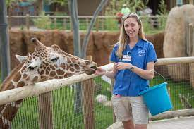

Welcome to John Bryce Zoo, your ultimate destination to explore and learn about a diverse range of animals from all around the world. Our mission is to foster awareness and appreciation for wildlife while providing a safe and enjoyable experience for visitors of all ages.
Founded in 1995, John Bryce Zoo has grown to become one of the most prominent zoological institutions globally. With our team of dedicated experts and professionals, we strive to maintain the highest standards of animal care and welfare, conservation efforts, and education.
At John Bryce Zoo, we believe in creating unforgettable memories for our visitors, allowing them to connect with nature and develop a deeper understanding of the animal kingdom. Our beautifully designed exhibits and interactive activities offer a unique opportunity to witness these magnificent creatures up close and personal.
As a leader in animal conservation, we actively participate in various breeding and rehabilitation programs to protect endangered species and contribute to their survival. We also collaborate with conservation organizations worldwide to support vital research and initiatives aimed at preserving biodiversity.
Whether you are a nature enthusiast, a student eager to learn, or a family seeking an exciting day out, John Bryce Zoo promises an enriching experience that will leave you with lasting memories. We look forward to welcoming you to our zoo and embarking on this incredible journey of discovery together.